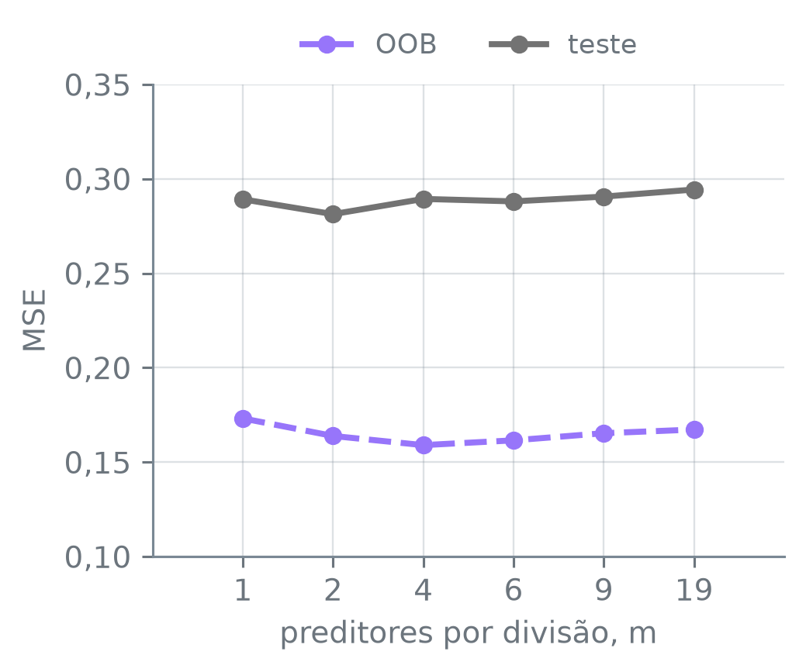
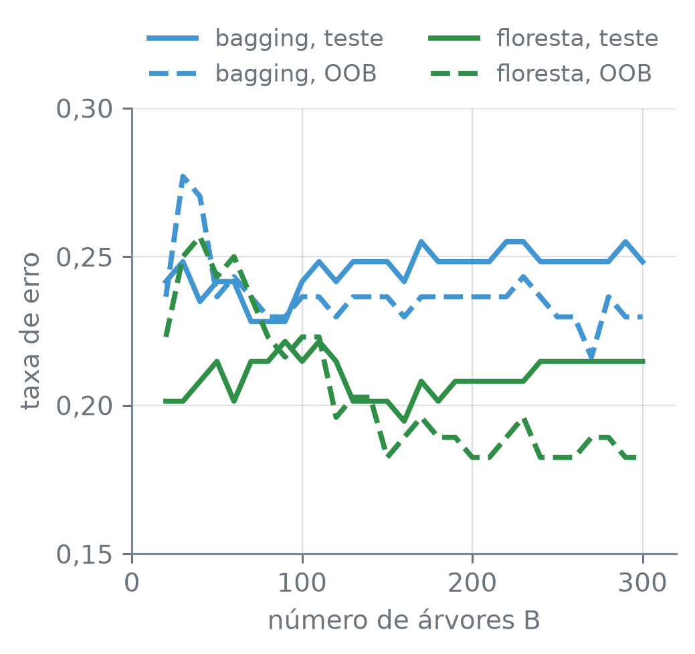

numero_br = lambda valor, casas=2: (
f"{valor:,.{casas}f}".replace(",", "_").replace(".", ",").replace("_", ".")
.replace("-", "−")
)Florestas Aleatórias
Nota
Esta seção corresponde à seção 8.2.2 de James et al. (2023).
No Hitters, várias colunas medem quase a mesma coisa: as vezes ao bastão, as rebatidas, as corridas e as bases por bolas acumuladas na carreira crescem juntas com o tempo de jogo de cada atleta. Uma árvore crescida numa amostra bootstrap procura o melhor corte entre todas as colunas, e o melhor tende a sair de uma dessas. Se quase toda árvore do bagging começa pela mesma pergunta, as árvores se parecem, e a média de árvores parecidas reduz menos a variância que a média de árvores diferentes. Dá para obrigar as árvores a serem diferentes umas das outras?
A função numero_br escreve os números com a pontuação brasileira:
Árvores parecidas demais
Os dados são os jogadores de Hitters com salário registrado, com o logaritmo do salário como resposta e as colunas de texto trocadas por indicadoras. O treino tem os mesmos 132 jogadores da seção 13.1, sorteados com a semente 12:
hitters = pd.read_csv("dados/Hitters.csv").dropna()
y = np.log(hitters["salario"])
X = pd.get_dummies(hitters.drop(columns="salario"),
drop_first=True, dtype=float)
treino_X, teste_X, treino_y, teste_y = train_test_split(
X, y, train_size=132, random_state=12)
print("treino:", len(treino_X), " teste:", len(teste_X))
print("colunas:", X.shape[1])treino: 132 teste: 131
colunas: 19O bagging de árvores de regressão é o RandomForestRegressor com max_features=None, em que toda divisão de toda árvore pode usar qualquer uma das 19 colunas. O chunk ajusta 500 árvores e conta, para cada coluna, quantas árvores a usam na raiz:
bagging = RandomForestRegressor(n_estimators=500, max_features=None,
random_state=13)
bagging.fit(treino_X, treino_y)
raizes_bag = pd.Series([X.columns[arvore.tree_.feature[0]]
for arvore in bagging.estimators_]).value_counts()
print(raizes_bag.to_string())
fracao = raizes_bag.iloc[0] / 500
print("primeira, entre 0,4 e 0,5:", 0.4 < fracao < 0.5)
print("três primeiras, mais de 4/5:",
raizes_bag.iloc[:3].sum() / 500 > 0.8)vezes_ao_bastao_carreira 243
bases_por_bolas_carreira 128
rebatidas_carreira 61
corridas_carreira 48
anos 11
impulsionadas_carreira 9
primeira, entre 0,4 e 0,5: True
três primeiras, mais de 4/5: TrueRandomForestRegressor(n_estimators, max_features, random_state) — ajusta n_estimators árvores de regressão sem limite de tamanho, cada uma numa amostra bootstrap do treino, e prevê com a média delas. max_features é o número de colunas sorteadas como candidatas em cada divisão; com None, todas são candidatas e o modelo é o bagging. O padrão do regressor, 1.0, também usa todas as colunas: sem dizer max_features, o RandomForestRegressor faz bagging. random_state fixa os sorteios.
modelo.estimators_ — a lista das árvores ajustadas. arvore.tree_.feature — a posição, entre as colunas de X, da coluna usada em cada nó da árvore; o nó 0 é a raiz. X.columns — os nomes das colunas; X.columns[k] é o nome da coluna de posição k.
pd.Series(lista).value_counts() — quantas vezes cada valor aparece na lista, do mais frequente ao menos frequente. s.to_string() — a série inteira como texto, sem a linha de tipo no fim. Com .iloc, raizes_bag.iloc[:3] pega os três primeiros valores, pela posição.
Só 6 das 19 colunas chegam à raiz de alguma árvore. A primeira da lista, vezes_ao_bastao_carreira, está na raiz de quase metade das 500 árvores, e as três primeiras juntas, em mais de quatro de cada cinco. O número exato de árvores de cada coluna pode variar em uma ou duas de um computador para outro: numa amostra bootstrap, dois cortes em colunas diferentes podem ser igualmente bons, ou quase, e o desempate depende do arredondamento.
As árvores do bagging diferem porque as amostras diferem, mas a primeira pergunta, a que divide os jogadores em dois grupos grandes, se repete. Na seção 13.1, a variância da média de \(B\) árvores com variância \(\sigma^2\) e correlação \(\rho\) entre cada par saiu como \(\rho\,\sigma^2 + (1 - \rho)\,\sigma^2/B\): a parcela \(\rho\,\sigma^2\) não cai com \(B\). Árvores que se parecem têm \(\rho\) grande, e mais árvores não resolvem.
Sortear as colunas a cada divisão
A saída é impedir que a mesma coluna forte seja sempre a escolhida, e o jeito de impedir é tirá-la da disputa numa parte das divisões.
A floresta aleatória (random forest) ajusta, como o bagging, uma árvore sem poda em cada uma de \(B\) amostras bootstrap e prevê com a média (ou com o voto, em classificação). A diferença está em cada divisão de cada árvore: antes de procurar o melhor corte, sorteiam-se \(m\) dos \(p\) preditores, e o corte só pode usar um desses \(m\). O sorteio é refeito a cada divisão. A escolha usual é \(m \approx \sqrt{p}\), e com \(m = p\) a floresta é o bagging.
No Hitters, \(p = 19\) e \(\sqrt{19} \approx 4{,}4\), e a floresta usa \(m = 4\). Uma coluna fixa fica fora do sorteio de uma divisão com probabilidade \((p - m)/p = (19 - 4)/19 \approx 0{,}79\): em cerca de quatro de cada cinco divisões, vezes_ao_bastao_carreira nem é candidata, e outras colunas têm a sua vez. O chunk ajusta a floresta com \(m = 4\) no mesmo treino e com a mesma semente:
floresta = RandomForestRegressor(n_estimators=500, max_features=4,
random_state=13)
floresta.fit(treino_X, treino_y)
raizes_flo = pd.Series([X.columns[arvore.tree_.feature[0]]
for arvore in floresta.estimators_]).value_counts()
print("colunas na raiz:")
print(" bagging", len(raizes_bag), " floresta", len(raizes_flo))
print("primeira da floresta,")
print(" menos de 1/5:", raizes_flo.iloc[0] / 500 < 0.2)colunas na raiz:
bagging 6 floresta 15
primeira da floresta,
menos de 1/5: TrueNa floresta, 15 colunas chegam à raiz, contra 6 no bagging, e nenhuma está na raiz de um quinto das árvores. Nas divisões em que a melhor coluna ficou fora do sorteio, a árvore corta por uma coluna mais fraca. Cada árvore da floresta, sozinha, fica melhor ou pior que uma árvore do bagging? O chunk mede o MSE de cada uma das 500 árvores nos 131 jogadores de teste e tira a média, nos dois modelos:
uma_arvore = {}
for nome, modelo in [("bagging", bagging), ("floresta", floresta)]:
erros_arvores = [
mean_squared_error(teste_y, arvore.predict(teste_X.to_numpy()))
for arvore in modelo.estimators_]
uma_arvore[nome] = np.mean(erros_arvores)
print("MSE de teste de uma árvore,")
print(" na média das 500, floresta")
print(" acima por mais de 0,01:",
uma_arvore["floresta"] > uma_arvore["bagging"] + 0.01)MSE de teste de uma árvore,
na média das 500, floresta
acima por mais de 0,01: Trueteste_X.to_numpy() — a tabela como array, sem os nomes das colunas; as árvores de estimators_ foram ajustadas sem os nomes, e prever com a tabela emitiria um aviso.
O sorteio tem um custo: o MSE de uma árvore da floresta, na média das 500, fica mais de 0,01 acima do de uma árvore do bagging. A figura põe as duas contagens lado a lado, com as oito colunas que mais aparecem na raiz somando os dois modelos:
colunas = (raizes_bag.add(raizes_flo, fill_value=0)
.sort_values(ascending=False).index[:8])
fig, eixos = plt.subplots(2, 1, figsize=(3.8, 4.6), sharex=True)
paineis = [(eixos[0], raizes_bag, "C0", "bagging, m = 19"),
(eixos[1], raizes_flo, "C2", "floresta, m = 4")]
for ax, raizes, cor, titulo in paineis:
contagem = raizes.reindex(colunas, fill_value=0)
ax.barh(range(8), contagem.values, color=cor, height=0.7)
ax.set_yticks(range(8), colunas, fontsize=8)
ax.invert_yaxis()
ax.set_title(titulo, loc="left", fontsize=9)
eixos[1].set_xlabel("árvores com a coluna na raiz")
plt.tight_layout()
plt.show()![Dois gráficos de barras horizontais empilhados, com o mesmo eixo horizontal, de 0 a 300 árvores, e oito colunas do Hitters no eixo vertical. No de cima, o bagging, em azul, a barra de vezes_ao_bastao_carreira chega perto de 250, a de bases_por_bolas_carreira passa de 100, a de rebatidas_carreira fica perto de 60, e as outras são curtas ou vazias. No de baixo, a floresta, em verde, as quatro primeiras barras ficam entre cerca de 70 e 90 árvores cada, e as outras entre cerca de 20 e 40: nenhuma domina.](03-florestas-aleatorias_files/figure-html/fig-raizes-output-1.png)
Hitters. Em cima, o bagging, em que toda divisão pode usar as 19 colunas (azul); embaixo, a floresta aleatória com \(m = 4\) colunas sorteadas por divisão (verde). As oito colunas são as mais frequentes somando os dois modelos.
s.add(outra, fill_value=0) — soma duas séries rótulo a rótulo; um rótulo que só existe numa delas conta como 0 na outra. s.sort_values(ascending=False) — a série em ordem decrescente de valor. s.index[:8] — os oito primeiros rótulos. s.reindex(rotulos, fill_value=0) — a série na ordem de rotulos, com 0 para o rótulo que ela não tem.
Em plt.subplots(2, 1, figsize, sharex=True), os dois primeiros números pedem dois painéis, um sobre o outro, e sharex=True dá aos dois o mesmo eixo horizontal; eixos é a lista dos painéis. ax.barh(posicoes, larguras, color, height) — barras horizontais. ax.invert_yaxis() — põe a primeira barra no alto. ax.set_title(titulo, loc="left", fontsize) — o título do painel, alinhado à esquerda.
Uma raiz diferente puxa o resto da árvore: os dois grupos em que a raiz divide os jogadores são outros, e as perguntas seguintes também. Uma forma de medir o quanto as árvores de um mesmo modelo se parecem é olhar para as previsões delas nos 131 jogadores do teste: se duas árvores sobem e descem juntas de jogador para jogador, a correlação entre as previsões delas é alta. O chunk ajusta 200 árvores para cada \(m\), de 19 (o bagging) a 1, e tira a média da correlação sobre todos os pares de árvores. Antes de rodar: com \(m = 1\), em que a coluna de cada divisão é sorteada sem escolha nenhuma, a correlação deve subir ou cair?
correlacao = {}
for m in [19, 9, 6, 4, 2, 1]:
modelo = RandomForestRegressor(n_estimators=200, max_features=m,
random_state=13).fit(treino_X, treino_y)
previsoes = np.array([arvore.predict(teste_X.to_numpy())
for arvore in modelo.estimators_])
pares = np.triu_indices(200, k=1)
correlacao[m] = np.corrcoef(previsoes)[pares].mean()
print(f"m = {m:>2}: {numero_br(correlacao[m])}")
valores = list(correlacao.values())
print("cai a cada m menor:",
all(a > b for a, b in zip(valores, valores[1:])))m = 19: 0,82
m = 9: 0,80
m = 6: 0,79
m = 4: 0,78
m = 2: 0,74
m = 1: 0,65
cai a cada m menor: Truenp.array(lista) — um array a partir de uma lista; aqui, uma linha por árvore e uma coluna por jogador de teste.
np.corrcoef(m) — a matriz de correlações entre as linhas de m, uma linha e uma coluna por árvore. np.triu_indices(n, k=1) — as posições acima da diagonal de uma matriz \(n \times n\), isto é, cada par de árvores uma vez só, sem a árvore com ela mesma.
A correlação cai a cada \(m\) menor: de 0,82 no bagging a 0,78 com \(m = 4\) e 0,65 com \(m = 1\). Mesmo com \(m = 1\) as árvores continuam parecidas, porque todas veem os mesmos 132 jogadores e todas tentam prever o mesmo salário. Ao longo dos jogadores, toda árvore razoável acompanha o salário, alto para uns e baixo para outros, e isso sozinho já deixa a correlação alta.
Essa correlação não é o \(\rho\) da fórmula. Ela é medida entre as árvores de um treino e percorre os 131 jogadores; o \(\rho\) fixa um jogador e se mede ao longo de muitos conjuntos de treino. A queda de 0,82 para 0,65 também não isola o quanto as árvores discordam: árvores com mais ruído, cada uma, baixam essa correlação mesmo com o mesmo \(\rho\), e uma árvore da floresta, em média, erra mais no teste que uma árvore do bagging, como se mediu acima.
A variância da média cai, então? Quem responde é a medição da seção 13.1: 50 conjuntos de treino de 132 jogadores sorteados entre os 263 e, em cada um, o bagging e a floresta com \(m = 4\), de 50 árvores cada, prevendo os jogadores que ficaram de fora.
posicoes = np.arange(len(X))
dois_modelos = {"bagging": None, "floresta": 4}
previsoes = {nome: np.full((50, len(X)), np.nan) for nome in dois_modelos}
erro_fora = {nome: np.zeros(50) for nome in dois_modelos}
for s in range(50):
dentro, fora = train_test_split(posicoes, train_size=132,
random_state=s)
for nome, m in dois_modelos.items():
modelo = RandomForestRegressor(n_estimators=50, max_features=m,
random_state=13)
modelo.fit(X.iloc[dentro], y.iloc[dentro])
previsoes[nome][s, fora] = modelo.predict(X.iloc[fora])
erro_fora[nome][s] = mean_squared_error(
y.iloc[fora], previsoes[nome][s, fora])
var = {nome: np.nanvar(p, axis=0) for nome, p in previsoes.items()}
for nome, p in previsoes.items():
erro_medio = np.nanmean((p - y.values) ** 2, axis=0)
resto = (np.nanmean(p, axis=0) - y.values) ** 2
print(f"{nome}: erro {numero_br(erro_medio.mean())}")
print(f" variância {numero_br(var[nome].mean(), 3)}"
f" + resto {numero_br(resto.mean())}")
print(" soma sem arredondar = erro:",
np.isclose(var[nome].mean() + resto.mean(),
erro_medio.mean()))
menor = (var["floresta"] < var["bagging"]).sum()
print("variância menor na floresta,")
print(" mais de 200 jogadores:", menor > 200)
ganhou = (erro_fora["floresta"] < erro_fora["bagging"]).sum()
print("floresta erra menos,")
print(" em mais de 35 dos 50 treinos:", ganhou > 35)
print(" e não em todos:", ganhou < 50)bagging: erro 0,23
variância 0,026 + resto 0,20
soma sem arredondar = erro: True
floresta: erro 0,21
variância 0,018 + resto 0,20
soma sem arredondar = erro: True
variância menor na floresta,
mais de 200 jogadores: True
floresta erra menos,
em mais de 35 dos 50 treinos: True
e não em todos: Truenp.zeros(n) — um array de n zeros; aqui, um lugar para o erro de cada conjunto de treino. np.isclose(a, b) — True se a e b são iguais a menos do arredondamento de ponto flutuante.
A conta é a da seção 13.1: para cada jogador, a variância das previsões e o resto, o quadrado da distância entre o centro delas e o log do salário observado, e as médias sobre os 263 jogadores. A variância média cai de 0,026 no bagging para 0,018 na floresta, uma queda de 0,026 − 0,018 = 0,008, quase um terço de 0,026. O resto fica em 0,20 nos dois, e o erro médio nos jogadores de fora cai de 0,23 para 0,21. As parcelas impressas estão arredondadas, e por isso 0,018 + 0,20 não dá 0,21 na página; sem arredondar, variância mais resto é o erro, nos dois modelos. A variância é menor na floresta em mais de 200 dos 263 jogadores, e a floresta erra menos que o bagging em mais de 35 dos 50 treinos, mas não em todos.
Na divisão da semente 12, uma árvore da floresta, em média, errou mais no teste que uma árvore do bagging; nos 50 treinos, a média da floresta errou menos que a do bagging na maior parte deles. Nessas duas medições, o que a média ganhou por juntar árvores menos parecidas compensou o que uma árvore, em média, perdeu.
Quantas colunas sortear
Com quantas colunas sorteadas por divisão a floresta erra menos? O \(m\) é o parâmetro que a floresta acrescenta ao bagging, e o erro OOB da seção 13.2 permite escolhê-lo sem separar jogadores e sem validação cruzada: um ajuste por valor de \(m\). No regressor, o oob_score_ é o \(R^2\), e o MSE OOB sai das previsões guardadas em oob_prediction_. O chunk mede, para cada \(m\), o MSE OOB nos 132 jogadores de treino e o MSE nos 131 do teste, com 500 árvores:
erros_m = {}
for m in [19, 9, 6, 4, 2, 1]:
modelo = RandomForestRegressor(n_estimators=500, max_features=m,
oob_score=True, random_state=13)
modelo.fit(treino_X, treino_y)
erros_m[m] = [mean_squared_error(treino_y, modelo.oob_prediction_),
mean_squared_error(teste_y, modelo.predict(teste_X))]
erros_m = pd.DataFrame(erros_m, index=["oob", "teste"]).T
print(erros_m.map(lambda v: numero_br(v, 3)).to_string())
oob, teste = erros_m["oob"], erros_m["teste"]
print("OOB de m = 4 abaixo de m = 19")
print(" e de m = 1 por mais de 0,005:",
oob.loc[4] < min(oob.loc[19], oob.loc[1]) - 0.005)
print("menor OOB em m = 4 ou 6:", oob.idxmin() in (4, 6))
print("menor teste em m =", teste.idxmin())
print("teste entre 0,27 e 0,30:",
bool(teste.between(0.27, 0.30).all()))
print("de um m a outro, OOB e teste")
print(" variam menos de 0,02:",
oob.max() - oob.min() < 0.02
and teste.max() - teste.min() < 0.02)
print("OOB abaixo do teste em todo m:",
bool((oob < teste).all())) oob teste
19 0,167 0,294
9 0,165 0,291
6 0,162 0,288
4 0,159 0,289
2 0,164 0,281
1 0,173 0,289
OOB de m = 4 abaixo de m = 19
e de m = 1 por mais de 0,005: True
menor OOB em m = 4 ou 6: True
menor teste em m = 2
teste entre 0,27 e 0,30: True
de um m a outro, OOB e teste
variam menos de 0,02: True
OOB abaixo do teste em todo m: Truedf.T — a tabela transposta, uma linha por \(m\). df.map(funcao) — aplica a função a cada valor; aqui, para escrever os números com vírgula. s.between(a, b) — True onde o valor está entre a e b. s.idxmin() — o rótulo do menor valor; aqui, o \(m\) de menor erro.
O pd.DataFrame recebe aqui um dicionário: cada chave, um \(m\), vira uma coluna, e index dá o nome das linhas; por isso a tabela sai deitada e o .T a transpõe.
O MSE OOB vai de 0,167 com \(m = 19\), o bagging, a 0,159 com \(m = 4\), e fica mais de 0,005 abaixo do OOB das duas pontas, \(m = 19\) e \(m = 1\). O menor OOB está em \(m = 4\) ou em \(m = 6\): pelo OOB, a escolha seria um desses dois. O teste, nos 131 jogadores de fora, põe o menor erro em \(m = 2\). As duas medidas variam pouco de um \(m\) para outro, menos de 0,02 nas duas colunas, e com diferenças desse tamanho a ordem entre os \(m\) do meio muda de uma medida para a outra. O OOB do \(m\) escolhido é também o menor de seis estimativas feitas com os mesmos jogadores, com o otimismo de que a seção 13.2 falou.
ordem = sorted(erros_m.index)
fig, ax = plt.subplots(figsize=(3.8, 3.2))
ax.plot(range(6), erros_m.loc[ordem, "oob"], color="C3", marker="o",
linestyle="--", label="OOB")
ax.plot(range(6), erros_m.loc[ordem, "teste"], color="0.45", marker="o",
label="teste")
ax.set_xticks(range(6), [str(m) for m in ordem])
ax.set_ylim(0.10, 0.35)
ax.set_xlabel("preditores por divisão, m")
ax.set_ylabel("MSE")
ax.yaxis.set_major_formatter(lambda v, _: f"{v:.2f}".replace(".", ","))
ax.legend(loc="lower center", bbox_to_anchor=(0.5, 1.0), ncol=2)
plt.tight_layout()
plt.show()
Hitters contra o número \(m\) de preditores sorteados por divisão, de 1 a 19; \(m = 19\) é o bagging. Em roxo tracejado, o MSE OOB nos 132 jogadores de treino; em cinza, o MSE nos 131 jogadores de teste. Aqui as cores separam as duas medidas de erro, não o bagging e a floresta. Os valores de \(m\) estão igualmente espaçados no eixo.
Na figura, erros_m.loc[ordem, "teste"] usa o .loc com dois argumentos: as linhas de ordem, de \(m = 1\) a \(m = 19\), e a coluna teste.
O OOB fica abaixo do teste em todos os \(m\). Os dois medem o erro em jogadores diferentes: o OOB, nos 132 do treino, cada um previsto pelas árvores que não o sortearam; o teste, nos 131 que ficaram de fora. Com uma divisão só, um grupo pode sair mais fácil de prever que o outro, e a distância de nível vale para todo \(m\), sem dizer nada sobre qual \(m\) é melhor. O que se lê da figura é a ordem dentro de cada curva, e ela não é a mesma nas duas. Os 50 conjuntos de treino medidos antes, que trocam de divisão a cada vez, dão o sinal mais firme sobre \(m = 4\) contra o bagging: a floresta errou menos em mais de 35 deles.
Bagging contra floresta nos pacientes
Em classificação, a comparação se faz do mesmo jeito. Os pacientes do Heart estão divididos como na seção 13.2: metade para o teste, sorteada com a semente 13, e as colunas de texto trocadas por indicadoras de todas as categorias.
coracao = pd.read_csv("dados/Heart.csv").dropna()
y_c = coracao["doenca_cardiaca"]
X_c = pd.get_dummies(coracao.drop(columns="doenca_cardiaca"),
dtype=float)
treino_Xc, teste_Xc, treino_yc, teste_yc = train_test_split(
X_c, y_c, test_size=0.5, random_state=13, stratify=y_c)
print("treino:", len(treino_Xc), " teste:", len(teste_Xc))
print("colunas:", X_c.shape[1])treino: 148 teste: 149
colunas: 18Com 18 colunas, \(\sqrt{18} \approx 4{,}2\), e a floresta sorteia 4 colunas por divisão: o max_features="sqrt", que é o padrão do RandomForestClassifier. O chunk faz crescer o bagging e a floresta de 10 em 10 árvores, de 20 a 300, e mede o erro OOB e o de teste em cada tamanho. Com 4 colunas por divisão em vez de 18, a floresta deve errar menos em todo tamanho, ou só a partir de muitas árvores?
tamanhos = range(20, 301, 10)
curvas = {}
for nome, m in [("bagging", None), ("floresta", "sqrt")]:
modelo = RandomForestClassifier(n_estimators=20, max_features=m,
oob_score=True, warm_start=True,
random_state=13)
curva = pd.DataFrame(index=tamanhos, columns=["oob", "teste"],
dtype=float)
for B in tamanhos:
modelo.set_params(n_estimators=B).fit(treino_Xc, treino_yc)
curva.loc[B] = [1 - modelo.oob_score_,
1 - modelo.score(teste_Xc, teste_yc)]
curvas[nome] = curva
print("m da floresta:", modelo.estimators_[0].max_features_)
for nome, curva in curvas.items():
print(f"{nome}, B = 300:")
print(f" teste {numero_br(curva['teste'].loc[300], 4)}"
f" ({round(curva['teste'].loc[300] * 149)} erros)")
distancia = curvas["bagging"]["teste"] - curvas["floresta"]["teste"]
pacientes = (distancia * 149).round()
print("floresta com 2 ou mais erros")
print(" a menos:", (pacientes >= 2).sum(), "de", len(pacientes))
print("floresta com mais erros:", (pacientes < 0).sum())
oob_300 = [curvas[n]["oob"].loc[300] for n in curvas]
print("OOB em 300, floresta abaixo")
print(" por mais de 5/148:", oob_300[0] - oob_300[1] > 5 / 148)m da floresta: 4
bagging, B = 300:
teste 0,2483 (37 erros)
floresta, B = 300:
teste 0,2148 (32 erros)
floresta com 2 ou mais erros
a menos: 28 de 29
floresta com mais erros: 0
OOB em 300, floresta abaixo
por mais de 5/148: Truearvore.max_features_ — o número de colunas sorteadas em cada divisão daquela árvore, já convertido de "sqrt" para um inteiro. s.round() — arredonda cada valor para o inteiro mais próximo; aqui, a distância entre as taxas de erro vezes 149 vira um número de pacientes.
Com 300 árvores, o bagging erra 37 dos 149 pacientes de teste e a floresta, 32, cinco pacientes a menos (37 − 32 = 5). Em 28 dos 29 tamanhos a floresta erra pelo menos dois pacientes a menos que o bagging, e em nenhum erra mais. Em 300 árvores, o erro OOB da floresta também fica abaixo do OOB do bagging, por mais de cinco pacientes de treino.
fig, ax = plt.subplots(figsize=(3.8, 3.6))
for nome, cor in [("bagging", "C0"), ("floresta", "C2")]:
ax.plot(curvas[nome].index, curvas[nome]["teste"], color=cor,
label=f"{nome}, teste")
ax.plot(curvas[nome].index, curvas[nome]["oob"], color=cor,
linestyle="--", label=f"{nome}, OOB")
ax.set_xlim(0, 320)
ax.set_ylim(0.15, 0.30)
ax.set_yticks(np.arange(0.15, 0.31, 0.05))
ax.yaxis.set_major_formatter(lambda v, _: f"{v:.2f}".replace(".", ","))
ax.set_xlabel("número de árvores B")
ax.set_ylabel("taxa de erro")
ax.legend(loc="lower center", bbox_to_anchor=(0.5, 1.0), ncol=2)
plt.tight_layout()
plt.show()
Heart contra o número de árvores \(B\), do bagging (azul) e da floresta aleatória com 4 colunas sorteadas por divisão (verde). A linha contínua é o erro nos 149 pacientes de teste; a tracejada, o erro OOB nos 148 de treino.
Cinco pacientes de 149 são uma diferença de 5/149 = 0,034 na taxa de erro, e outra divisão dos 297 pacientes daria outros erros aos dois modelos. O chunk refaz a comparação em 20 divisões, com as sementes 0 a 19, cada uma com 200 árvores por modelo, e conta os erros de teste:
erros = []
for s in range(20):
tr_X, te_X, tr_y, te_y = train_test_split(
X_c, y_c, test_size=0.5, random_state=s, stratify=y_c)
erros.append([
(RandomForestClassifier(n_estimators=200, max_features=m,
random_state=13).fit(tr_X, tr_y)
.predict(te_X) != te_y).sum()
for m in [None, "sqrt"]])
erros = pd.DataFrame(erros, columns=["bagging", "floresta"])
vantagem = erros["bagging"] - erros["floresta"]
print("floresta erra menos:", (vantagem > 0).sum(), "de 20")
print("empate:", (vantagem == 0).sum(), "de 20")
print("bagging erra menos:", (vantagem < 0).sum(), "de 20")
print("vantagem média da floresta,")
print(" entre 2 e 4 pacientes:", 2 < vantagem.mean() < 4)
print("maior vantagem do bagging,")
print(" mais de 2 pacientes:", vantagem.min() < -2)floresta erra menos: 16 de 20
empate: 1 de 20
bagging erra menos: 3 de 20
vantagem média da floresta,
entre 2 e 4 pacientes: True
maior vantagem do bagging,
mais de 2 pacientes: True(previsto != te_y).sum() — o número de pacientes de teste em que a previsão difere da resposta, isto é, os erros.
A floresta errou menos em 16 das 20 divisões, empatou em 1 e errou mais em 3. Em média, errou entre dois e quatro pacientes a menos, e em ao menos uma divisão o bagging ganhou por mais de dois pacientes. No Heart, como no Hitters, sortear as colunas ajudou na maior parte das divisões, sem ganhar em todas.
Sortear as colunas troca árvores melhores por árvores menos parecidas. Um \(m\) pequeno costuma ajudar quando há muitos preditores correlacionados entre si, como as colunas de carreira do Hitters, cujas correlações a seção 12.5 mediu: quando vezes_ao_bastao_carreira fica fora do sorteio, outra coluna de carreira quase igual a ela pode entrar no lugar. Um \(m\) pequeno pode atrapalhar, num caso não medido aqui, quando há poucas colunas com sinal entre muitas de ruído: muitas divisões ficam só com colunas de ruído para escolher (Hastie et al. 2009, seção 15.3.4). Por isso o \(m\) é um parâmetro a escolher, e \(m = p\), o bagging, é um dos valores da escolha.
Hastie, Trevor, Robert Tibshirani, e Jerome Friedman. 2009. The Elements of Statistical Learning. 2nd ed. Springer.
James, Gareth, Daniela Witten, Trevor Hastie, Robert Tibshirani, e Jonathan Taylor. 2023. An Introduction to Statistical Learning with Applications in Python. Springer.